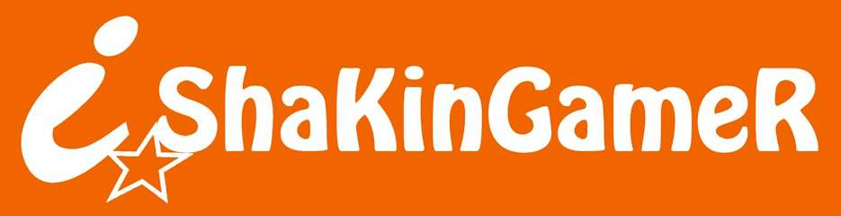
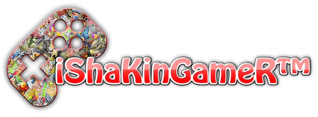
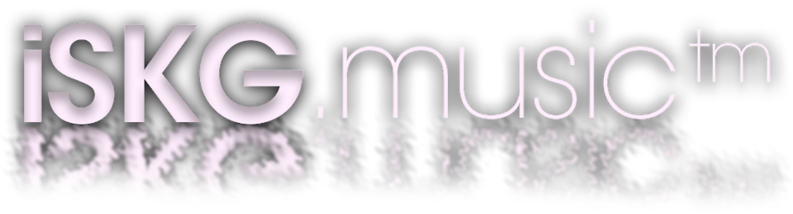
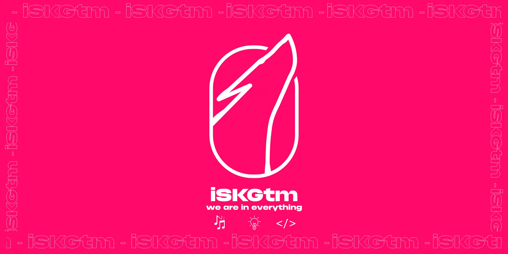

Curriculo Disponivel (Dev)
Todas as logos usadas. Imagem: Reprodução
Quem criou tudo isso?
Olá, me chamo Anthony Max, criei a iShaking Creative Media para levar nossos serviços a outro nível.
Nascido em 2001, sempre fui uma pessoa mais racional e lógica do que sensivel (expressar sentimentos não é meu forte). Meu primeiro contato com a informatica, foi em 2006, e em 2013 já sabia como "tudo" funcionava. Sempre gostei da área de Tecnologia e Audio-Visual e acreditava que ambos poderiam andar de mãos dadas, não é atoa que nossos serviços atualmente, faz exatamente isso.
Atualmente sou formado em Analise e Desenvolvimento de Sistemas, na luta para a pós graduação, com vários certificados complementares e de excelência de tudo relacionado a Tecnologia e Design Gráfico, mostro isso nos respectivos botões "Produções" & "Dev" caso queira ver meu curriculo.
Sei que não é facil levar essa marca, pois é necessario ter responsabilidade e compromisso e ao contrario do que minha foto pode parecer, eu tenho responsabilidades não só com a iShaking Creative Media, mas com minha própria vida.
Esse ai sou eu. Imagem: Perfil Pessoal
Pre-iSKGtm
Em meados de 2014 decidi criar um canal na plataforma de vídeos da Google, o YouTube, com foco em jogos foi chamado de "Só Jogos". Não há mais registros desse ocorrido, mas o conteúdo era sobre mistérios, com respectivos jogos "Grand Theft Auto: San Andreas" de Rockstar Games & toda série "Sonic" de SEGA. Mas devido a inexperiência com edição de vídeo na época, e como os equipamentos, que eram de 2006, eram obsoletos e de baixo desempenho, acabou não durando muito pois após o 5º vídeo, optei por desistir da ideia e encerrar o canal que durou apenas 6 meses.

Logo de 11/2015. Imagem: Acervo iSKGtm
Surgimento de "iSKGtm"
No final de 2015 decidi criar um nickname fixo em um jogo chamado SA:MP, dai veio o termo "iShaKinGameR" (nickname bem juvenil, não é? Tinha apenas 14 anos.)
Mas afinal, o que significa tudo isso?
"i" = Internet | "ShaKinG" = Agitando & Rei | Gamer = Gamer
Bem esquisito né, este jogo possuia um limite de caracteres, quando eu participava de grupos, tinha que por uma tag do grupo e o limite de caracteres não permitia colocar a tag com aquele nick. Foi aí que surgiu o termo que uso até hoje:
iSKG > iSKG™ > iSKGtm

Logo de 01/2017. Imagem: Acervo iSKGtm
Surgimento da iShaking Creative Media
Em Outubro de 2016, com equipamentos de ultima geração na época, decidi tentar mais uma vez no YouTube e com a mesma proposta de 2014. Foi um sucesso, cada jogo que eu jogava online, sempre havia alguem que conhecia ou lembrava de mim por jogar bem um jogo especifico ou ter uma edição de vídeos que quase ninguém fazia na época. Esse padrão de proposta seguiu até 2019, onde surgiu o "iSKGtm Music", que são músicas produzidas por mim.

Logo "iSKGtm Music" de 09/2019. Imagem: Acervo iSKGtm
Mudanças de propostas
Em 2022, nossa proposta foi alterada seguindo até hoje, após o surgimento de "iSKGtm Dev", que significa desenvolvimento de aplicações e Websites, UX/UI, etc. Juntamente com o surgimento de "iSKGtm Dev", o termo "iShaKinGameR" parou de ser utilizado, passando a ser "iShaking Creative Media", com a frase "Estamos em Tudo!" alterando com tempo para "We Are in Everything".

Logo "iShaking Creative Media" atual. Imagem: Acervo iSKGtm
iShaking Creative Media, atualmente...
Com equipamentos de ultima geração, nós levamos nossos serviços a outro nivel, de forma mais profissional ao comparar com periodos de 2017, não ficando limitado apenas em vídeos de gameplays como antes, mas sim, de mostrar todo nosso empenho em criação de serviços, participações, portfólios do jeito que a iShaking Creative Media sabe fazer.
iSKGtm Music | iSKGtm Prod's. | iSKGtm Dev
iSKGtm, We Are in Everything.